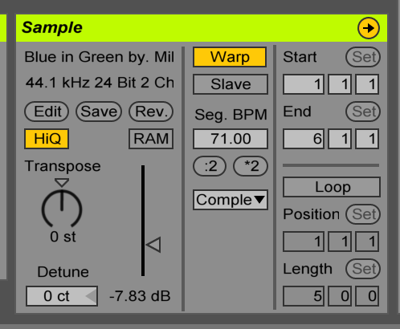
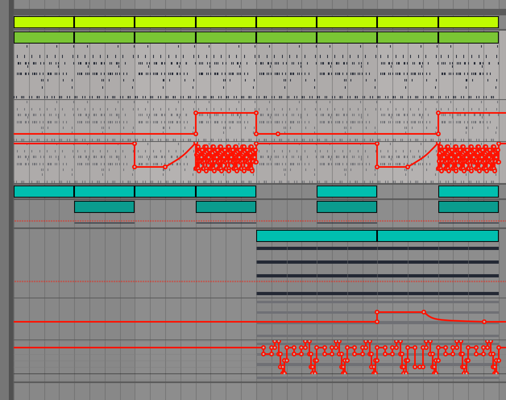
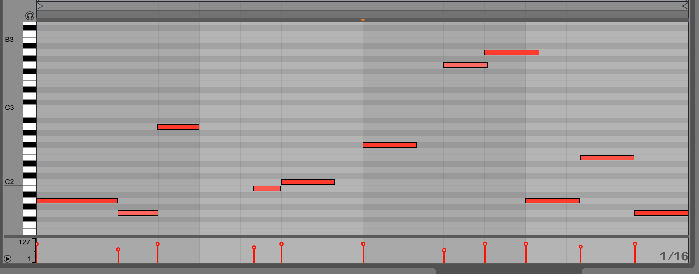
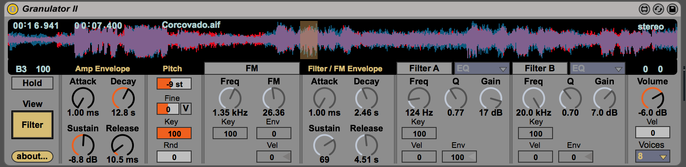
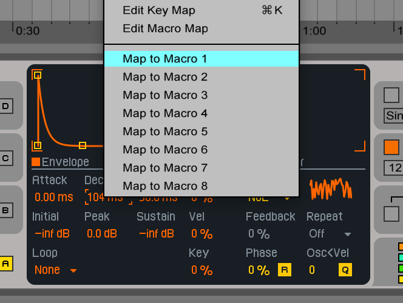
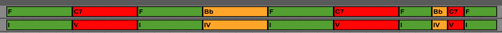
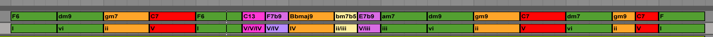

No niin, tnn leikitn audion kanssa. Jos soittaa midi huolimattomasti sisn, niin sit on tietysti helppo korjata, mutta mit tehd jos on nittnyt vaikka kitaraa ja jossain kohdassa ei pysykn rytmiss? Tai lyt jotain kivan samplen, joka toimii melkein? Tai jos haluaa muuten vain sotkea rytmin uusiksi? Warp mode avuksi!
Otetaan pohjaksi Kind of Bluelta Bill Evansin soittama Blue in Greenin intro. Se on soitettu rubatona, joten se vaatii vhn tyt jos aikoo saada sen toimimaan jonkin kompin kanssa. Voisin ripata sen levylt, mutta laiskuuttani nappaan sen suoraan YouTubesta: http://www.youtube-mp3.org/ antaa pihalle mp3:n kun heitn siihen YouTube-linkin:
Draggaan mp3:n suoraan Liven arrangement-nkymn.
Nyt toi osaa jo seurata biisin tempoa. Jos vaihdan ylreunasta tempoksi 120 niin toi soittaa sen tuplasti nopeammin muuttamatta silti nen korkeutta, jos 45 niin aika paljon hitaammin.
Ylpss on aika paljon kohinaa ja alapss on kontrabasso josta haluamme eroon. Laitetaan EQ ja leikataan ylpt ja alapt.
Piano kuulostaa vhn hengettmmmlt, koska alap lhti pois, mutta sill ei vlttmtt ole vli jos mukaan listn muita instrumentteja: yleens se joka kuulostaa hyvlt yksinn kuulostaa huonolta joukossa ja pinvastoin. (Signaalissa on vain rajallisesti tilaa eri soittimien taajuuksille.)

Tmn jlkeen valitaan alku, isketn cmd-J joka konsolidoi alkuosan omaksi tiedostokseen ja samalla normalisoi wavin. Se kuitenkin laskee automaattisesti volumea niin ett se pysyy samalla tasolla (kuvassa -7.83dB), mutta normalisoidaan se 0 dB:hen, niin ett tll tasolla on tysi dynamiikka ja sit voi laskea sitten kanavan faderill.
Tst nkymst voisi halutessaan mys transponoida klippi yls tai alas puoliaskelilla (Transpose) tai vhemmn (Detune). Voi auttaa sek epvireisten soitinten korjaamisessa ett leikkimisess jos haluaa jotain jnn. Lisksi Rev.-napilla saa knnetty tuon vrinpin.
Nythn tein aika tylsi korjauksia siirtmll vain iskuja aika suoraviivaisille paikoille, mutta tuolla voisi tehd paljon villimpkin manipulaatioilla. Kannattaa kokeilla erilaisten juttujen kanssa. Joskus olen soittanut jotain sisn ja sitten koittanut ihan vitsill rytmitt sen uusiksi ja onkin tullut paljon parempi.
Ja mun pit selvsti alkaa nimet egagalle menevt esimerkit paremmin tai egagalta menee maine kun ihmiset luulevat niit sen tekemiksi.
Jos jollain muulla on Splice-tunnukset, niin voin jakaa noi projektit siell muillekin. (Tein siis eilen toisen esimerkin filttereist ja automaatiosta.) Siell voi kuunnella preview mp3:n ja avata suoraan projektin Liveen, jos se on asennettuna.
No niin, pistin tnnekin: http://komu.kapsi.fi/ableton-examples/
https://www.ableton.com/en/packs/connection-kit/ slightly_smiling_face
Ah. Ji vahingossa tuonne. l vlit siit. Se on se huonesimulaattori josta puhuin joskus. Auttaa siis miksaamaan luurit pss. Voi kertoa huoneen koon, millainen taajuusvaste kaiuttimilla on, pn koon jne. ja sitten se muokkaa signaalia ikn kuin kuuntelisi tuollaisessa huoneessa.
Joo, jostain siihen tulee resonanssia. Jos kuuntelet oikein tarkkaan, niin se kuuluu alkuperisell levytyksellkin: spotify:track:0aWMVrwxPNYkKmFthzmpRi
Korostuu vain tuossa nopeutetussa. Tuota voisi saada EQ:lla poistettua, mutta en viitsinyt lhte siihen ettei mene ihan hakoteille.
Jep. On kyll upea biisi. Mutta en tied voisiko tuo olla sympaattista resonanssia jostain nitystilassa olevasta asiasta. Pelleist tms? Mutta kieltmtt nyt kun sit kuuntelee, niin se on tosi voimakas tuossa alkuperisesskin versiossa.

No niin, kydn kirurgisiin operaatioihin: yksi vaihtoehto leikki kompilla olisi warppailla sit, mutta koska kompin ajoituksessa ei ole mitn vikaa vaan haluamme siirrell kokonaisia ptki edestakaisin, niin se ei ole paras lhetysmistapa. Toinen vaihtoehto olisi copy-pasteilla ksin arrangement-nkymss palasia: se on kaikista joustavin tapa, koska silloin voi tehd mit tahansa. Toisaalta se on hieman tylst. Siksip pyydmme Live choppaamaan samplen meille valmiiksi sampleriin, niin ett jokaisesta iskusta tulee oma midi-nuottinsa.
Ja tll projekti: https://splice.com/studio/C9DA4AC3-D2EB-4588-B417-11236570B689
On muuten yllttvn hauskaa tehd tllaisia kun ei tarvitse yritt saada mitn valmista ja toisekseen voi tehd ihan kieli poskessa korneja juttuja joita ei normaalisti viitsisi.
Mainitaan nyt viel tuosta slice-toiminnosta sen verran ett se tosiaan tekee tuosta uuden Drum Rackin, jossa jokainen slice ptyy omaan slottiinsa. Rack sitten aina mpp sisntulevat nuotit oikealle samplelle. Mutta tuo Drum Rack on siit vinke vekotin, ett niiden slottien ei ole pakko olla pelkstn sampleja, vaan jokainen slotti on itsessn mielivaltainen chaini midist audiolle. Defaulttina se tekee joka slottiin oman samplerin, mutta niit voi vaihtaa syntikkoihin tai samplejen jlkeen voi laittaa efektej jne. Eli jos haluaa vaikka ekvalisoida jotain samplea, niin sinne vain oma EQ jne.
Absotonin perusidea on siis se, ett on kolmenlaisia blokkeja (funktioita): midi-efektit (MIDI -> MIDI), instrumentit (MIDI -> Audio) ja audio-efektit (Audio -> Audio). Noita voi sitten iske normaalisti kanavalle ketjuun perkkin, groupata uusiksi blokeiksi jotka toteuttavat vastaavia signatureja (esim. "instrumentti + audio-efekti + audio-efekti" on itsessn instrumentti, koska se on tyyppi MIDI -> AUDIO). Ja rackit mahdollistavat noiden laiton rinnakkain: drum rack sislt monta instrumenttia ja valitsee niist yhden, instrument rack sislt monta rinnakkaista instrumenttia jotka kaikki saavat saman midin ja joiden output miksataan yhteen ja effect rack monta rinnakkaista efekti jotka kaikki saavat saman audion ja joiden output miksataan yhteen.
Eli tuosta syntyy sitten kivasti kompositionaalisuutta rinnan ja sarjassa ja noista palikoista voi rakentaa taas isompia palikkoja jne.
Onko muuten sopiva vaikeustaso? Pitisik olla enemmn/vhemmn detaljeja? Ja onko yliptn yhtn kiinnostavaa? smiley
kaks ekaa vaikutti ainakin sopivalta. on kiinnostavaa toki. mutta esim. eilen meni koko piv toimistolla/sohossa hengatessa ja y koodatessa ett en pysty mitenkn samaan tahtiin consumoimaan noita :)

Tnn tehdn 2-vuotiaan pivunien mittainen biisi yksinkertaisella tekniikalla: tehdn lyhyt ptk, duplikoidaan se ja muokataan jlkimmist. Sitten taas duplikoidaan, muokataan jlkimmist jne. niin kauan kunnes koko homma on valmis. Tt sovelletaan joka tasolla: yksittisiss riffeiss ja koko biisin rakenteessa. Kuvassa lopputulos.
Isketn duplicate-nappia, jotta tuplaa loopin pituuden ja kopioi nuotit jlkimmiselle ptklle. Listn jlkimmiseen osaan vhn hihat-iskuja ja muutetaan neloselle tuleva hihat avoimeksi.
Kopioidaan uudestaan, muokataan. Ja taas kerran, jotta saamme 8 tahtia komppia joka el koko ajan vhn, mutta pysyy periaatteessa samana.
Ji nkjn ylimrist aikaakin, koska Aki ei ole viel hernnyt. Ehk pitisi viel list niit bassoja. (Htisesti huonoilla luureilla kuunnellut balanssit: tuli taas lyttmsti bassoa.)
Toki kun alle tunnissa teki tuon, niin tuo on tuollaista paikallaan junnaavaa roskaa (enk ole miksannut sit mitenkn), mutta itse tekniikka on ihan hydyllinen. Etenkin yksittisten instrumenttien osioiden kohdalla, mutta mys kokonaisten sovitusten kanssa sopivissa tyyleiss kunhan ei ota sit liian orjallisesti. Ja hydyllinen ennenkaikkea kun tekee harjoituksia. On hyv yritt saada tehty valmiita biisej paljon, vaikkei aikoisi niit koskaan kellekn julkaista.
jep vaikuttaa luontuvan tohon abletonin malliin tollainen copy-modify/enhance-metodi. aika helposti vissiin saa eloisaa soundia noilla filttereill/efekteill
Mahtaakohan kukaan muu kostua tst mitn kun olen kuitenkin lhinn vain antanut vinkkej tuohon softan UI:hin? slightly_smiling_face
luulen ett ariokin on kiinnostunut ja vaikkei koskaan mitn tekisi niin saa ehk jotain kuvaa millaista tyskentely/kehittminen on. ainakin itselle avaa silmi
amigalla taisin joskus opetella vhn kyttn sound fx:, mutta musiikillisia taitoja 0 ja mik trkeint ideoita 0 niin siihen se ji
No niin, sitten bouncataan midi audioksi. Asioiden pitminen midin on tietysti monessa mieless joustavampaa, koska voi helposti muuttaa nuotteja jne. Toisaalta jos on paljon syntikoita ja efektej, ne saattavat vied melko paljon CPU-tehoja. Livess on Freeze-ksky, jolla voi pyyt Live laskemaan etukteen audion halutulle raidalle, jonka jlkeen raidalla olevat asiat eivt vie CPU:ta, mutta vaativat tietysti enemmn levytilaa. Jos sitten haluaakin muokata, voi tehd unfreezen helposti.
Toisaalta jos freezen jlkeen haluaa midist kokonaan eroon, voi sanoa Flatten. Thn voi olla muutamakin hyv syyt: ensinnkin audion kanssa voi tehd jotain jatkoksittelytemppuja, jotka midill eivt onnistu. Toisekseen moni muusikko on sit mielt ett audion "printtaaminen" parantaa tuottavuutta, koska sitoutuu johonkin eik voi viilata asioita loputtomiin. Kolmanneksi, joissakin syntikoissa on epdeterminismi eri soittokertojen vlill kun taas samplattu audio on aina sama. Ja neljnneksi, mahdollisten phasing-ongelmien selvittely on helpompaa audiolla. Me teemme freezen ekasta syyst.
Nyt kun raita on freezattu, emme ksittelekn sit sellaisenaan, vaan nappaamme sen sampleriin jonka sitten triggerimme midill. Luomme uuden midi-raidan, lismme siihen Samplerin, draggaamme regionin sampleriin ja luomme yhden pitkn C3-nuotin.
Ja tll projekti: https://splice.com/studio/20EF202C-3694-43C2-A656-768EE7875FAD
Tuo syntikkachain voi olla mys tutustumisen arvoinen. Siin on pllekkin Analog ja Operator ja molemmilla omat efektilenkkins.
mulla voi kans kaiken muun tekemisen ohella olla vaikea pysytell tahdissa, mutta katselen noita kyll mielellni lpi kun ehdin.

Illan minivinkki. Vasemman alareunan Info View antaa kytnnss kaikista UI-elementeist listietoa mouse-hoverilla.
Vhemmn tunnettu juttu on se, ett aika monelle elementille sen voi customoida: esim. clipeille voi valita context-menusta Edit Info Text. Tm on hyv paikka laittaa esim. TODO-kommentteja eri clipeille.

miten kukaan ehtii lapsen pivunien aikaan tekeen muuta kun korkeintaan keittn sumpit? (vaikka kuinka olis intoa)
No jos kuuntelit tuon, niin ehk huomasit ettei siin nyt varsinaisesti mitn ehtinytkn tehd. slightly_smiling_face
Jos olisi ollut aikaa, niin olisi ehtinyt kehitt tolkullisempia soundeja, mietti fiksumpia riffej/sointuja ja muutenkin saada vhn enemmn variaatiota kokonaisuuteen. Nyt oli vain tuollainen tehdn htisesti jotain demoa.
Sitten pikkuvinkki, jonka olisin itse halunnut kuulla jo monta vuotta sitten Logicia kyttess.
Jos haluaa tehd volume-muutoksia jollekin raidalle, ensimminen ajatus on tietysti tehd automaatio kanavan volumelle. Tm on huono ajatus, koska jos myhemmin haluaa st miksausnkymn feiderill kanavan tasoa suhteessa muihin, joutuu tekemn automaationsa uudestaan. Tekee miksauksesta ikv.

Nyt voi tehd automaationsa utility-efektin gainiin, niin ett tasovaihtelut ovat suhteellisia suhteessa kanavan perustasoon. Vastaavasti temppu onnistuu panoroinnille.
Ongelmaksi j en se, ett jos haluaa vied automaatiolla kanavan tysin hiljaiseksi. Utilityll saa maksimissaan -35dB pois. Tuollaisessa tapauksessa laittaa tyhjn audio effect rackin ja automatisoida sen gainia: sill on stvaraa -dB asti.
on mennyt monta piv ettei oo yhtn kerennyt tt uusinta entry kattella... mut eikhn jossain vaiheessa
No tiivistettyn: jos joskus tulee halua automatisoida kanavan volumea, niin l automatisoi Track Volumea, vaan lis Utility ja automatisoi sen gainia. Kiitt miksatessa kanavien tasoja.
niin ei tartte tiivist :D (kiitos silti). ajattelin vain ett parempi lukea sitten huolella kun lukee; jos lukee pinnallisesti niin saattaa jd kunnolla lukematta
Trmsin muuten kaapissa ylimriseen Live Lite (https://www.ableton.com/en/products/live-lite/) sarjanumeroon jos jotakuta kiinnostaa. (Noita saa melkein mink tahansa audiotarvikkeen kylkiisen.)
Ellen ihan vrin muista niin tuo on viel pikkuisen karvalakkisempi kuin se 79 maksava Intro. Mutta jos joku haluaa, niin voin heitt tuon sarjanumeron, mulla ei ole kytt.
Tst https://www.amazon.com/BasicSynth-Daniel-Mitchell/dp/0557022126 (Komulta lainassa) innostus alkoi.
Ostin MIT Pressin The Audio Programming Bookin ja tuon sai halvalla koriin mukaan. Ajattelin ett se toinen olisi kunnon kirja. Mutta se olikin joukko eri tyyppien kirjoitamia artikkeleita jotka toistivat samat asiat N+1 kertaan.
Tuossa MIT Pressin kirjassa on viel kaikkia ihan typeri lukuja siit kuinka C toimii, kuinka C:ll kirjoitetaan tiedostoja tai kuinka tehd plugineja CSound-ympristn.
Hmm, no eip tuossa niin hirvesti sampleja nyttisi tuon feature-listauksen perusteella tulevan. Mutta ehk noi kaikki versiot sisltvt samat bitit ja toi on vain lisenssist kiinni koska suiten download on mys 912MB. (Siin on sitten lisksi viel ties kuinka monta gigaa erilaisia paketteja jotka voi imuroida.)
Oletko muuten imuroinut kaikki packit, jotka Suiteen kuuluu? Mulla olisi DVD:t jos ei huvita imuroida ~8 DVD:n verran kamaa.
Kannattaa kokeilla aloittaa Abletonin omien Max-devicejen imuroinnilla. Pieni paketti jossa on paljon kultaa: LFO, Granulator II, Convolution Reverb jne.

Kun nyt tuli tuosta LFO-devicest mainittua, niin leikitn sill sitten. Otin pohjaksi edellisen filters-esimerkin (http://komu.kapsi.fi/ableton-examples/filters.mp3) jonka draggasin suoraan Liveen omaksi samplekseen ja pistin looppaamaan.
Listn kanavalle joku efekti jota automatisoidaan automaattisesti. Vocoder on varmaan sopivan korni ja ennen kaikkea selke, jotta tunnistetaan se.
Laitetaan se Pitch Tracking -moodiin, jolloinka se ei ota carrieriksi erillist signaalia vaan generoi alla olevalla oscillaattorilla itse signaalin jonka modulaattorina on alkuperinen raita. Vaihdetaan oscillattoriksi keskikokoinen pulssiaalto ja tehdn jotain muita sntj. Knnetn Dry/Wet 60% kieppeille, jotta molemmat signaalit kuuluvat melko kovaa.
Sitten viel toinen esimerkki kuinka saa generoitua muutoksia vhll vaivalla.
Tss esimerkiss kytn Native Instrumentsin Monarkia joka on Minimoog-emulaatio. Olen bouncannut projektiin kuitenkin tuon tuolla tehdyn jutun audionakin, joten ei tarvitse vlitt tuon puutteesta.
Joka tapauksessa ensin leikitn vhn aikaa vivuilla tai etsitn mukava presetti jotta saadaan soundi josta tyktn.

Sitten pihvi! Piirretn cutoffille automaatio-envelope, mutta klikataan Loop: Linked muotoon Loop: Unlinked ja vaihdetaan tuon pituus oletusarvosta 1:0:0 arvoon 1:1:0 (eli 1 tahti ja 1 isku = 5 iskua).
Nyt nuotit luuppaavaat 4 iskun mittaista luuppia, mutta automaatio pll luuppaakin 5 iskun mittaista luuppia joten tuo ei toista itsen kuin 20 iskun (5 tahdin) jlkeen.
Jos lisisi viel vaikka 7 tahdin mittaisen automaation eri parametrille, niin tulisi (4*5*7)/4 = 34 tahtia variaatioita. (Huomattavaa ett 4, 5 ja 7 eivt ole keskenn jaollisia, joten saadaan maksimiperiodi.)
http://komu.kapsi.fi/ableton-examples/ -> unlinked-automation ja https://splice.com/studio/E58D6D66-F9B8-4DBE-92A0-9EAA14B5F78E
h, mit min horisen. Tietenkn en voi bouncata automaatiotonta versiota audioksi ja sen jlkeen list automaatiota audion plle, koska tuossa automaatiossa leikittiin nimenomaan sill alkuperisell devicell, eik milln ulkoiselle efektill. No, tuo projekti on aika hydytn jos ei omista Monarkia, mutta onneksi itse ajatus muuten on sovellettavissa mihin tahansa.
enp omistakaan. hotsitteli kyll hankkia NI-setti, mutta sitten tajusin, ett voisin vaikka ensin katsoa mit jo olevilla synilla saan aikaiseksi.
mietin kyll, ett jos hankkis NI:n insttrumentit, se vois vhn helpottaa sit ongelmaa, ett aina tuntuu softasynat huonoilta ja siks palaa leikkimn hardiksilla.
No, Analog ja Operator ovat kyll molemmat asiallisia. Pit vain muistaa, ett ne ovat kohtuu pelkistettyj, koska olettavat ett niiden pern voi sitten kasata muita Liven efektej. Mitn Massive-tyyppist wavetable-syntikkaa ei Liven mukana tule, mutta jos haluaa pelkstn sellaisen, niin Serum on parempi Massive kuin Massive.
Ja Operator on tietysti hankala sen takia, ett FM-synteesi vaatii sen ett siihen vhn perehtyy. Muuten saa vain random noisea pihalle.
Ja toki softankin kanssa on ihan hyv ajatus mpt keskeisimmt parametrit johonkin kontrolleriin ja sitten knnell niit potikoita ja fiilistell.
joskus ajat sitten tuli leikitty jonkin verran FM7-softasynalla, mutta viime vuosina olen lhinn kyttnyt analogi- ja virtuaalianalogilaitteita. aika pelkistetystkin analogisynasta saa kyll ylltvn paljon kaikkea erikoista pihalle ilman efektejkin, kun vhn st.
ja nin ei-asiantuntijana mulle ainakin on muodostunut sellainen fiilis, ett sit kivempi ja parempi syna, mit muhevammat ja monipuolisemmat net saa ilman efektej. sit kun sillai on hyv saundi, voi viel pern viimeistell efekteill.
tai siis mit nyt tarkoittaakaan efekteill. tietysti lfo:t ja envelopet tss tarkoitan syntikan sisisiksi, mutta miknhn ei tietenkn est Livess kyttmst synan ulkopuolisia komponentteja noihinkaan.
FM tosiaan vaatii vhn matikkaa pohjalle, ett saa haluamaansa ulos. Toki Operatorin kanssa voi huijata, koska ensinnkin se sallii erilaisten aaltomuotojen kytn pohjana ja lisksi siin on filtterikin, jolla voi leikata. (Sen sijaan ett tarvitsisi mietti mitenk moduloida aaltoa jotta saa tiettyj taajuuksia aikaiseksi.) Ja toki voi iske pern ihan normaalin filtteri-efektin jne.
Saturaatio ja kevyt reverb voi olla ihan jees usein. Joissakin soundeissa chorus (joka toki lytyy monesti synan itsens puolelta).
Mutta yleisesti lhden tosiaan Analogilla liikkelle, koska suunnilleen osaan saada haluamani soundin siit pihalle. Tutut oscillaattorit, filtterit, envelopet, siinp se. Bassoja kyll teen usein Operatorilla. Saa kivaa FM-prin niihin helposti.
Osaan kyll teoriassa laskea mit taajuuksia siniaallon modulointi toisella siniaallolla tuottaa, mutta kytnnss en ole sit koskaan lhtenyt tekemn. Monimutkaisemmille aalloille mulla ei ole pienintkn aavistusta siit mit tapahtuu. Kytnnss menen vain siniaaltojen kokonaislukumonikerrat tuottavat harmonisia juttuja (ja pienemmt eritoten) ja ei-kokonaisluvut tuottavat epharmoniaa-nyrkkisnnll. Sitten vain yritt trmt johonkin hauskaan ja st envelopeja liikkuakseen soundista toiseen.
En tied huomasitko, mutta kohtuu uudessa Livess (9.5, 9.6?) tuli tuohon autofiltteriinkin eri filtteritoteutuksia. Se vanha toteutus on tuo Clean, mutta nyt on mys nelj muuta joissa on vhn enemmn srm. Kaikille noille uusille tyypeille voi mys st Drive-parametria, niin saa ne filtterit srkemn kivasti.
/u/Holy_City osasi kertoa seuraavaa:
- OSR on SVF jonka pohajana on obskuuri OSCar ja jota Oberheim SEM kytt
- MS2 on Sallen-Key jonka pohjana on Korg MS-20
- SMP on joku Abletonin oma
- PRD on ladder eli pohjana on Moog
Liven manuaalihan jtt noihin vhn mystisyytt OSR [] is modeled on the filters used in a somewhat rare British monosynth, and is available for all filter types ja The PRD circuit uses a ladder design and has no explicit resonance limiting. It is modeled on the filters used in a legacy dual-oscillator monosynth from the United States and is available for the lowpass and highpass filters. Mutta kyllhn tuosta jlkimmisest jo arvasi.
Toi on kyll hupsua kun ilmeisesti tekijnoikeussyist ei koskaan mainita noita mit emuloidaan (tai nauhoitetaan). Monark esimerkiksi ei missn sano olevansa Minimoog-emulaatio vaan kytt lauseita kuten "MONARK captures the pure organic sound of the undisputed king of monophonic analog synthesizers. Vastaavasti Scarbee MM Bass ei missn sano, ett MM on MusicMan Stingray vaan ainoastaan "SCARBEE MM-BASS is [] inspired by the sound of Bernard Edwards (Chic). Bringing you the warm and creamy fingered bass sound of the 70s known from countless disco and funk recordings. Kuka tahansa basisti tietysti tiet ett Bernard Edwardsin soundi on synonyymi MusicManille. Ja toki MM on aika hyv vihje.
MusicManilla on muuten hauska historia: Leo Fender myi Fenderin ja perusti uuden lafkan. Tai kilpailukieltosyist joku muu perusti sen, mutta Fender suunnitteli soittimet.
Nyt leikitn granulaarisynteesill ja Granulator II -syntikalla, jonka saa Liven full-version mukana.
Aloitetaan etsimll joku sample jota kytetn pohjana uusien soundien luomiseen. Otin Elis Reginan ja Antonio Carlos Jobimin version Corcovadosta ja katkaisin sielt puolivlist muutaman sekunnin ptkn.
Konsolidoin ptkn omaksi samplekseen iskemll cmd-J.
Listn Granulator omalle raidalleen, dragataan ylloleva sample siihen ja lhdetn metsstmn kivan kuuloista ptk draggailemll hiirt ympri samplea.
Vasemmalla oleva Grain 2.43 Hz kertoo kuinka pitk grain on kytss, Spray 333ms kertoo ett hypitn vhn ympriins etsimss sampleja kun koostetaan tuota jne.
Normisyntikan kanssa lhtee yleens liikkeelle jostain ajatuksesta soundin kanssa, Granulatorilla etsitn onnekkaita yhteensattumia: niinp kannattaa kokeilla eri parametreja ja samalla soitella nuotteja eri oktaaveista ja katsella lytyisik jotain kivan kuuloista.

Lis granulaarisynteesist: https://en.wikipedia.org/wiki/Granular_synthesis ja Granulatorista: http://monolake.de/technology/granulator.html
Tuunataan viel inspectorista vhn asetuksia: laitetaan dialille kunnon nimi ja asetetaan sille Include in Presentation, joka tarkoittaa sit ett se tulee normaali-UI:ssa nkyviin.
Max-deviceill on dev-tila ja presentation-tila. Dev-tilassa nkyy kaikki funktiot, reititykset jne. ja se on mihin tuo aukeaa oletuksena kun tekee uuden devicen. Presentation-tila on se mik normaalisti halutaan nytt loppukyttjlle.

Midi-efektien lisksi tuolla voi toki rakentaa soittimia, audioefektej, mit vaan. Mukana tulee aika massiivinen kirjasto korkean tason rakennusblokkeja ja hyvi tutoriaaleja. Lisksi mink tahansa Max-devicen toteutusta voi itse tutkia avaamalla valmiin devicen edit-tilaan. Esim. tlt lytyy paljon http://www.maxforlive.com/library/ ja toki Liven paketeissa on mys useita.
Teinp yhden raakileen: http://komu.kapsi.fi/k-minor/ark.mp3 Ajattelin, ett jos tekisi jotain vkisin, joten pistin dawiin tyhjn ABABCB-rakenteen ja sitten runnoin. slightly_smiling_face Voisin viel viimeistell tuon ja purkaa sen osiin jos kiinnostaa.
Tnn syntetisoidaan bassorumpu.
Olen haastanut itseni tekemn kokonaisen biisin kytten pelkstn Operatoria. Haluan siihen kuitenkin rummut, joten teen nekin Operatorilla. Aloitetaan bassorummulla.
Aloitetaan lismll raidalle Operator ja sen jlkeen viel Spectrum, jotta nemme mit aaltomuodolle tapahtuu. Kytketn Operatorin oskillaattorit C ja D pois, koska emme tarvitse niit. Sen jlkeen vaihdetaan A Fixed tilaan ja laitetaan taajuudeksi 100Hz. Nin soittamillamme nuoteilla ei ole mitn merkityst nen korkeuden kannalta. Soitetaan jotain nuotteja. Eip kuulosta bassorummulta, vaan pelklt siniaallolta.

Muutetaan nuotin korkeutta ajan myt. Kytketn pitch envelope Kytketn se plle, Asetetaan 62% envelopen intensiteetiksi ja sdetn envelope niin ett se menee nopeasti oktaavista yls neljn oktaaviin ja tippuu sielt alas -31 askeleeseen. Nythn tm kuulostaa jo bassorummulta! Ei toki oikealta bassorummulta, mutta sellaiselta joka voisi lyty elektronisesta biisist.
Asetetaan oskillaattoreille eri taajuudet, nostetaan molemmat -0 dB tasolle ja lasketaan koko devicen volume -12dB. Klikataan keskipaneelin ylreunan oikeanpuolimmaisinta nappia jotta oskillaattorit saadaan rinnan. (Oletuksena B tekisi FM-modulaatiota A:lle, mik ei ole sit mit nyt halutaan.) Listn viel low-pass-filter, jolla leikataan ylimrisi korkeita taajuuksia pois.
Jos noita makroja lhtisi mppilemn, niin varmasti noi velocityjen decay/release -ajat olisivat hyv kandidaatti, niin voisi yhdell vivulla kontrolloida onko tuo tiukka vai boomy.
Ja jos @slack_kyttj on viel kiinnostunut audio-juttujen ohjelmoinnista, niin tmn nen ohjelmointi voisi olla ihan hauska projekti. Jos unohtaa filtterit ja kompurat, niin ei paljon simppelimmksi mene: kontrolloidaan parin eri siniaallon volumea ja nenkorkeutta kyrn mukaan.
Pyysin Kansalliskirjaston Arton mys tnne single-channel guestina, koska on Arton kanssa puhuttu paljon musajutuista ja nm asiat kiinnostivat Artoakin.


Nin syntyi hihat jonka soundia voi viel vhn muokata makroilla. Jos Decay on lyhyt, niin tuo on suljettu, jos sen knt puolen sekunnin tienoillel, niin saadaan avoin hihat.
Sek bassorumpu ett hihat nit ohjeita seuraamalla pitisi muuten onnistua kytnnss mill tahansa syntikalla, niss ei ole kytetty mitn Operatorin hienouksia.


Paketoidaan viel kaikki rummut yhdeksi kokonaisuudeksi.
Tehdn uudelle kanavalle uusi drum rack ja dragataan devicet rackin slotteihin. Tmn jlkeen avataan I-O tabi.
Vaihdetaan Snaren soittamaksi nuotiksi A2, koska se kuulostaa jrkevmmlt.
Laitetaan molemmat hatit choke groupiin 1. Tm tarkoittaa sit, ett jos toinen noista soi kun tulee isku toiselle, niin se soiva sammutetaan. (Eli avoin hat ei voi jd soimaan jos isketn suljettua hattia.)
Kokonaisuudelle voisi taas mapata makroja, mutta jtn sen nyt vliin.

Pivitin tuon esimerkki-mp3:n niin ett siin on snare mukana. Noi soundit vaatisivat viel viilausta, mutta perusidea rumpujen syntetisointiin tuli varmaan selvksi tst. Joka tapauksessa mulla on nyt itsellni pohjalla rack, jota voin lhte viilaamaan Operator-biisi tehdessni.
Tuli parissakin kohdassa aiemmin viitattua siihen kuinka kompressorilla voi st rumpujen transientteja halumaansa suuntaan, mutta en selittnyt sit sen tarkemmin. Nyt selitys.
Yll nkyy sama snare-isku kolmeen kertaan ja ko. kanavan kompressorille tehdyt attack/release -automaatiot. Ylemmn kanavan output on nitetty alemmalle kanavalle, jotta kompressorin vaikutukset nkee kuvassa.
1. Lyhyt attack, lyhyt release: kompressori vaimentaa signaalia heti iskun tullessa, mutta lyhyt release lopettaa vaimennuksen samantien. Tuloksena on tasapaksu soundi, jossa alun kova transientti ei erotu muusta iskusta erityisesti.
2. Lyhyt attack, pitk release: kompressori vaimentaa taas signaalia heti, mutta release pit vaimennuksen tason yll koko iskun ajan. Tuloksena on suunnilleen alkuperisen signaalin muotoinen kyr. Jos inputissa olisi monta iskua eri volumeilla, iskujen keskiniset dynamiikkavaihtelut pienentyisivt niiden soundin hvimtt.
3. Pitk attack, pitk release: iskun tullessa kompressori rupeaa vaimentamaan iskua hitaammin, vaimennus kest koko iskun ajan. Tm aiheuttaa sen, ett vaimennus psee kunnolla vauhtiin vasta kun alun transient on mennyt jo ohi. Nin kompressori tekee tuosta transientist vielkin korostuneemman suhteessa muuhun iskuun.
(Koko samplen pituus oli 100ms, lyhyt attack 0.02ms, pitk attack 0.13ms, lyhyt release 1ms ja pitk release 181ms.)
Samat snnt toimivat toki mink tahansa instrumentin kompressointiin. Vaikka kitaran komppauksesta voi korostaa transientteja tai pehment niit.
No niin, leikin hetken aikaa Operatorilla ja sain kuin sainkin aikaiseksi kokonaisen biisin, jossa kaikki soundit tulevat Operatorista: http://komu.kapsi.fi/k-minor/operator.mp3 Muutenkin pelkki Liven stock-plugineja (paitsi master chainissa on disabloituna Isone luureilla miksaamista varten). Projekti lytyy tlt: https://splice.com/studio/E44E8AF5-8C9A-4C94-B5BB-25030BA74EE0
Enk tosiaan kyttnyt mitn presettej millekn soundille, vaan lhdin joka kanavalla liikkeelle Operatorin oletusasetuksista. kki tuohon psi sisn vaikkei ollut koskaan aiemmin tosiaan hirvesti leikkinyt tuolla.
Pikkuinen workflow-vinkki: kannattaa erotella aikaa eri aktiviteeteille. Voisi varmasti jakaa tarkemminkin, mutta mulla menee puuhailu karkeasti kolmeen osaan:
1) Biisien teko. Saattaa olla "kunnon" biisi, pienimuotoinen harjoitus tai vaikka vain 8 tahdin luuppi, mutta tarkoitus on kuitenkin tehd musiikkia. Tt voisi toki jakaa viel osiin muttei menn siihen.
2) nisuunnittelu. Leikin syntikoilla, efekteill, jne. ilman ett tarkoituksena on tehd biisej. Kun lydn mielenkiintoisia ni, tallennan presetit jotta voin kytt niit myhemmin. Lisksi tm on tietysti hyv harjoitusta. Aika usein menee kyll siihen ett olisi tarkoitus tehd tt, mutta sitten inspiroiva soundi johtaakin siihen ett lydn itseni tekemst biisi.
3) Muu tykaluilla leikkiminen/opiskelu. Toisin kuin edellisess, tarkoitus ei ole saada aikaiseksi uusia presettej vaan tutustua eri tykaluihin ja tekniikoihin. "Koitanpa tehd kasarityylisen gated reverb -efektin snareen", "Opiskelen mit Saturator tekee eri asetuksilla eri soundeille", "Opettelen tekemn asian X Pushilla", "Opiskelen joukon uusia nppimistoikoteit" jne. Eli ehk juuri sen tyyppist juttuja joita olen tnne laittanut.
Jos yritt keskitty pelkstn biisien tekoon, niin helposti loppuu tekniikka kesken.
Toi auttaa mys siihen, ett jos huomaa ettei ole juuri nyt inspiraatiota biisin tekoon, niin on kuitenkin pakko muuta mit voi tehd/leikki. smiley
tohon liittyen ajatus: kun @slack_kyttj kanssa ollaan muutama kerta reactia harjoiteltu, niin tulee vastaan kaikenlaista ihmettely, esim. typescriptin/webpackin/best practicen/idean asetuksien kanssa.
kannattaa kirjoittaa yls ne ihmettelyn aiheet ja palata niihin. tosin meidn tapauksessa kun on kaksi heppua niin voi toinen jatkaa perusasian eteenpin viemist kun toinen vaikka hakee listietoa / varmistaa ett on ymmrretty oikein
ehk ptee mys yo. workflowhon. eli jos on jonkin mainitun osan tavassa tekemss, niin kun alkaa menn liikaa rajan yli, niin pist yls. ett vltt sen ett alkaa pomppoilla osien yli tai ett ei en muistakaan myhemmin
Tuota ekaa voisi ehk viel purkaa sen verran ett sen alla iso juttu mulla on erilaiset pikkuiset tutkielmat (etydit): "kuinka moduloida sujuvasti etiseen svellajiin, esim. Cm -> Gbm", "kuinka rakentaa house-raita", "kanavoidaan Philip Glassia" jne.
Ja tosiaan jonkinlainen itsekuri on ehk ihan hyv. Ei se nyt toki vrin ole jos huomaakin itsens taas kohdasta 1), mutta mulla meinaa hirven helposti karata siihen ja lopputuloksena on se, etten oikein saanut kehitetty osaamista tai soundipankkiani enk kuitenkaan saanut mitn kunnon biisikn, koska ei kuitenkaan ollut oikeaa ideaa vaan vain soundi jolla oli kiva jammailla hetki.
Eli yritn ainakin hetken aina vastustaa kiusausta siirty biisin tekoon jos oli tarkoitus tehd muuta. Mutta en nyt niin hirvesti pist vastaan, koska leikki tm kuitenkin vain on.
Vhn sama kuin soitintenkin kanssa. Jos on tarkoitus opiskella bassolla tietty asiaa, niin on hyv vltt kiusausta ruveta vain soittelemaan juttuja jotka osaa.

Musiikkia tehdess olisi syyt tyskennell melko hiljaisilla tasoilla. Kaikki kuulostaa paremmalta kovalla, joten jos kuuntelee koko ajan kovalla, niin antaa itselleen liikaa anteeksi. Toisaalta korvat vsyvt nopeammin kovaan neen ja pian menett viimeisetkin objektiivisuuden rippeet sen suhteen mit kuulee.
Toisaalta vlill on hyv kuunnella vhn kovempaakin ja varmistaa ett kaikki kuulostaa jrkevlt mys niin.
Listn master-kanavan loppuun Utility joka laskee signaalin tasoa -6dB ja annetaan sille nimeksi -6dB.
Kaikille deviceille voi mys tallettaa omat defaulttinsa jotka tulevat kun devicen lis raidalle. En ole noita muuten stnyt, mutta olen pistnyt noille deviceille parhaan laadun oletuksena plle. Eli esim. EQ:lle voi valita popupista Oversampling ja sen jlkeen Save as Default Preset jolloinka tulevaisuudessa saa oletuksena EQ:n jolla on Oversampling pll. Vastaavasti esim. Saturator sislt Hi-Quality -togglen.
Puran sit ark-biisi, kuten lupasin. Kytin siin alunperin aika paljon NI Kompleten soundeja (bassot, rhodes, torvet, rummut), mutta tein version jossa on Live Suiten basso + rhodes ja bounsasin rummut ja torvet audioclipeiksi. Joten nyt sen saa auki ilman Kompletea auki ja sill voi leikkikin. Tlt lytyy: https://splice.com/studio/B9BCDC58-1322-4961-A371-274111B49EB3
Rakenne on siis ninkin yksinkertainen. Koska toi on aika kiireess kasattu, niin suurin osa koostuu 8 tahdin palikoista. Jos nyt lhtisi tystmn tst eteenpin, niin tietysti lhtisi tekemn noihin vhn variaatiota, fillej jne. Ja sitten jotain ylimrisi efektielementtej jne. Ja eri osien transitioihin pitisi list jotain hmyst kuulijalle viemn huomion. Nythn toi vain tksht A-osasta B-osaan ja pinvastoin.
Rumpuihin olen aika tyytyvinen, niiss tapahtuu koko ajan jotain pient. Voisi toki tapahtua enemmnkin.
Alunperin tosiaan kytin Scarbee Jay-Bassia (http://www.native-instruments.com/en/products/komplete/guitar/scarbee-jay-bass/), mutta laitoin nyt tuohon versioon Live Suiten oman basson (https://www.ableton.com/en/packs/guitars-and-bass/).
A-osan bassossa articulate on 58, joka tarkoittaa sit ett basso soittaa velocityst riippuen avoimia tai glidattuja nuotteja.
Scarbee osasi tehd noille yhteen sidotuille nuoteille viel hammer-on/pull-off -juttuja, mutta toi Liven basso ei ymmrr niit, joten tm ei kuulosta lheskn niin fiksulta kuin alkuperinen.
Tosiaan tuossa Scarbeen bassossa on yli 2 gigaa sampleja yhdest bassosta ja joukko skriptej jotka valitsevat niit soiton perusteella. Melkein mink tahansa artikulaation saa pihalle. Olen basistinakin niin tyytyvinen ett usein kytn tuota sen sijaan ett soittaisi itse.
A ja B-osan melodiat olivat ihan vain jotain pentatonista improvisaatiota, johon oli sitten listty vhn muitakin nuotteja. Pari lyhytt ideaa ja variaatioita niist.
Rumpukomppi on tuollaista perus 1/16-funkkia. A-osassa hihat kiinni, B-osassa auki. Fillej aina vliin.
Mutta tuossapa tuo nin kkiseltn avattuna, jos on kysyttv, niin voi kysy. Tosiaan tst jos jaksaisi vied eteenpin, niin voisi lhte lismn variaatiota niin ettei missn instrumentissa olisi koskaan tysin identtist 8 tahdin ptk, tekemn vhn automaatiota niin ett eri instrumentit tulevat vuorotellen esiin ja menevt taas taustalle (aika paljon voi instrumenteille tehd ilman ett kuulija edes tajusi kiinnittneens huomiota johonkin sen takia ett miksaaja oli pttnyt ett nyt siihen olisi tarkoitus kiinnitt huomiota), lismn kaikkia pieni one-time eventtej jne.
Niin joo, prosessista viel. Lhdin liikkeelle sill, ett rmpyttelin kitaralla sointuja ja pdyin A-osan kulkuun C#m7, Amaj7, F#m7, Ebm7-5, Gb7alt. Nauhoitin sen ja laitoin plle rummut ja basson, sitten poistin kitaran ja pistin rhodeksen.
B-osaan ei ollut mitn ideaa vaan brute forcetin sen vaan ett saa jotain. Melodia siin ylltti mynteisesti. smiley
Niin joo, rhodeksesta viel: siin on paljon nuotteja ja vaihteluita yhden soinnun aikana, mutta ne ovat vain samojen 7/9-sointujen knnksi. En viitsinyt tuossa tempossa lhte monimutkaistamaan harmoniaa milln vlisoinnuilla ettei mene basson kanssa ristiin. (Over-biisisshn piano soittaa "varsinaisten" sointujen lisksi paljon muitakin sointuja.)
Eri knnsten kytt on helppo tapa list vhn liikett jos sointu tuntuisi muuten olevan paikallaan liian kauan.
No niin, koko biisin tekeminen pelkll Operatorilla oli vaikeusaste 1, nyt vaikeusaste 2.
Eilen illalla tuli mieleen ett kaipa sit voisi tehd kokonaisen biisin yht samplea leikkelemll ja manipuloimalla. Nyt sain valmiiksi. Ihan alussa tulee muutaman sekunnin sample josta ihan kaikki biisiss oleva on johdettu. http://komu.kapsi.fi/k-minor/se-tudo.mp3
hienointa tuossa on se, ett lopputuote kuulostaa pikaiselta bossa novalta slightly_smiling_face
Kerrotaan nyt viel salaisuudet:
- 1 Original: alkuperinen sample, lopussa ptkitty lyhyihin ptkiin ja isketty dub-kaiku plle
- 2 Clips: samplesta erilaisilla kaiku/filtteri/dd -komboilla nauhoitettuja clippej
- 3 Beat: sample ptkitty 1/16-nuotteihin joita on sitten pistetty gridiin joksikin rytmiseksi jutuksi
- 4 Reverb: sample vedetty tysin mrn 60 sekunnin reverbin lpi ja syntyneen maton plle tehty efektiautomaatiota
- 5 Bass: Granulatorilla alkuperisest samplesta poimittu lyhyt ptk joka on bouncattu sampleriin ja soitettu sill
- 6 Pad: Granulatorilla otettu ptk taas bouncattu sampleriin ja soitettu sill
- 7 Vocoder: sample ptkitty 1/8-nuotteihin joita trigattu ihan randomilla, menee vocoderin lpi jossa moduloi itsens. pll viel filter-delay joka iskee eri taajuuksia eri delayll oikealle ja vasemmalle.
Lisksi melkein kaiken pll on aika paljon LFO:lla tehty rytmist automaatiota ja sitten tietysti noi nkyvt kyrt. Ja pirusti kaikua kaikkialla. slightly_smiling_face
Monessa efektiss on itsessn dry/wet-controlli, jolla voi st miss suhteessa lopputulokseen miksataan alkuperist kuivaa signaalia ja miss suhteessa prosessoitua signaalia.
Kaikissa efekteiss ei kuitenkaan ole st thn tai joskus halutaan pist monta efekti perkkin ja halutaan kontrolloida niiden suhdetta kuivaan signaaliin.
Efektirkki mahdollistaa miksaamisen yhdell sdll. Listn siis uusi tyhj Audio Effect Rack ja listn siihen kaksi chaini context-menusta.
Dragataan isojen palkkien ylpuolella olevat pienet palkit niin ett isoon palkkiin tulee crossfade. Tm kertoo sen, ett kun chain-selector (oranssi palikka nollan kohdalla) on vasemmalla, ylempi kanava miksataan tysill ja alempi on hiljainen. Vastaavasti kun chain-selector on oikealla, alempi miksataan tysill. Chain-selectoria voi kiskoa hiirell.
Mptn viel EQ:n cutoff ja reverbin decay-time makroihin ja piilotetaan ylimriset asiat pois nkyvist.
Lopputuloksena on palikka jossa voi helposti st reverbin aikaa, filtterin cutoffia ja suhdetta jossa kuivaa ja reverb-signaalia miksataan yhteen. Ja lisksi meill on valmis dry/wet-palikka, jota voi kytt pohjana muille vastaaville ketjuille.
Aika usein tulee vastaan tilanne, jossa haluaa verrata kahta eri versiota efektist. Eli jos meill on raidalla vaikka reverb, voimme iske cmd-d joka duplikoi sen, muokata jlkimmist reverbi ja pist sen pois plt.
Sitten voi kytke ekan pois plt ja jlkimmisen plle. Jos tekee pikkuisia muutoksia, on kuitenkin vhn tylst togglata noita kahdella hiiren klikkauksella (puhumattakaan siit, ett kun vaihdoksessa kest kauan, on hankalampi havaita pieni muutoksia).
Isketn siis cmd-k, jotta pstn iskemn nppimistmakro. Painetaan ensin reverbin toisen virtanappia ja painetaan jotain nppint. Sitten painetaan toisen reverbin virtanappia ja painetaan samaa nppint uudestaan. Sitten isketn uudestaan cmd-k, jotta pstn mppystilasta pois.
Nyt valitun nppimen painaminen togglaa molemmat efektit kerralla joten on helppoa vaihtaa niiden vlill.
Sitten klassinen keyboardin splittaus. Kaikki C2:n vasemmalla puolella oleva menee bassolle, oikealla puolella oleva pianolle. Jotta bassolla voitaisiin kuitenkin soittaa C2-oktaavissakin olevaa kamaa, basson chainiin on listty Pitch +12 midi-efekti.
Normaalisti toki kannattaisi tehd vain kaksi eri raitaa eri instrumenteille, mutta tm on nppr jos haluaa soittaa keyboardilla useita instrumentteja yht aikaa.
http://komu.kapsi.fi/ableton-examples/ -> instrument-racks (https://splice.com/studio/61691297-F873-40A2-BB8C-5F791855455D) soittaa nelj tahtia kutakin noista neljst esimerkist.
Viimeisest nyt viel sen verran kommenttia, ett toki toi LFO:lla pyriv instrumentinvaihto oli lhinn hupsuttelua (vaikka yllttvn jrkevlt se kuulostikin), mutta toi instrumenttien vaihtaminen noin on ihan hyv tekniikka kun tekee hocketing-juttuja (https://en.wikipedia.org/wiki/Hocket). Voi ensin soittaa/kirjoittaa melodian kerran ja sen jlkeen leikki automaatiolla (joko kuunnella laulua ja nauhoittaa knobin vntj samalla tai sitten piirrell kyri) instrumenttien vaihdoille. Huomattavasti helpompaa kuin nuottien siirtminen raidalta toiselle jos haluaa testailla erilaisia ajoituksia vaihtoihin.
<Ladattu ei-kuvatiedosto>
Pivn hupsutteluna tehdn satunnaista mattoa chillout-raidan pohjalta. Tein YouTubeen haun chill flute ja lysin tllaisen raidan:
Imuroin mp3:n http://www.youtube-mp3.org/ -palvelun avulla ja kiskoin mp3:n Simpleriin.
Laitoin Simplerin Slice-modeen. Tm etsii automaattisesti transientit samplesta ja mpp ne perkkisiin nuotteihin (vasemman laidan lippu kertoo mik on ensimminen sample ja siit eteenpin jokainen transient menee aina seuraavaan nuottiin, maksimissaan 64 sliceen asti). Jtin lipun ihan alkuun, jotta sampleja poimitaan alkupst.
Kasvatin Fade In sek Fade Out -arvoja, jotta samplet eivt tkshd niin pahasti.
Laitoin Simplerin eteen viel Arpeggiatorin ja Randomin.
Arpeggiator muuntaa pohjassa pidetyt nuotit 1/16-nuoteiksi. Random perss arpoo nuotin tilalle jonkun muun.
Nin saan pihalle satunnaisia 1/16 nuotteja niin kauan kuin pidn kosketinta pohjassa. Nm mppytyvt satunnaiseen sliceen alkuperisess samplessa ja sopivalla samplella efekti on aika kiva.
Kun nyt sitten tekee MIDI-raidan, jossa on vain yksi pitk nuotti joka soittaa koko ajan (eli kytnnss pukkaa pihalle kokoajan niit 1/16-nuotteja) ja samalla liikuttaa hiirell tuota vasenta lippua, psee liikkumaan ympri samplea ja etsitn lytyisik jostain kohtaa jotain jota voisi kytt kyttkelpoisena instrumenttina.
Tai sitten voi nauhoittaa tuota itse liikett. Aloitin vasemmasta laidasta, siirtelin hiirt pikkuhiljaa kunnes psin oikeaan laitaan ja sitten taas takaisin vasemmalle. Lopputulos oli tllainen: http://komu.kapsi.fi/ableton-examples/simpler-slicing.mp3
Tll on aika vhn tekemist alkuperisen biisin kanssa vaikka se siit onkin revitty. Ja jos tuntuu pahalta samplata toisten biisej, niin voi samplata jotain omaa aiempaa biisin tai sitten tehd jonkun ptkn joka on tarkoitettu ainoastaan inputiksi tlle vaiheelle.
Parhaiten toimii tietysti joka materiaali, jossa soinnut eivt juuri vaihdu ja nuotitkin ovat pentatoniselta asteikolta. Nin kaikki pihalle tuleva on enemmn tai vhemmn harmonista.
Mutta tosiaan sen sijaan ett yritt tehd mitn biisej, toi on hyv tapa metsst yksittisi kohtia joita samplata ja kytt pohjana muille asioille. Kuten: http://komu.kapsi.fi/ableton-examples/simpler-slicing-sample.mp3
No niin, pakkohan mun oli hetki leikki tuolla ja tehd muutaman tahdin ptk: http://komu.kapsi.fi/ableton-examples/simpler-slicing-song.mp3 Nyt ollaan sen verran kaukana alkuperisest biisist ettei kyll hvettisi en yhtn sen samplaaminen.
<Ladattu ei-kuvatiedosto>
Tmhn ei en liity Liveen mitenkn, mutta olisiko kiinnostusta sille, ett kvisin lpi vhn harmonian perusteita? (Sointuasteet, funktionaalisuus, moodit, dominanttisuus, muunnesoinnut, tritonussubstituutio jne.) Eli ei mitn advanced jazz-kamaa, vaan ihan perusteita joiden plle on hyv rakentaa.
Vai onko ihan tuttuja juttuja? Noi ei loppujen lopuksi ole monimutkaisia asioita ja antavat paljon tykaluja.
ei voi sanoa ett olisin mitenkn sydmeen sisistnyt, on noista tullut jotain lueskeltua, mutta unohtuu aika pian kun ei sovella koskaan. kyll kiinnostaa siis. ajallisesti lagaan sun postauksia, ett ei mikn kiire ole ainakaan
No, aloitetaan sitten moodeista eli kirkkosvellajeista, koska kaikki muu rakentuu sen plle. Moodit ovat diatonisen asteikon plle rakennettuja asteikkoja. Helpointa on ajatella niit pianon valkoisten koskettimien kautta: jos soittaa pelkstn valkoisia koskettimia C:st oktaavin verran ylspin, tulee soittaneeksi duuriasteikon eli joonisen moodin. Ja aloittaa A:sta, niin soittaa luonnollisen molliasteikon eli aiolisen moodin. Jos aloittaakin jostain muusta, niin saadaan viel 5 muuta moodia.
(Kytn anglosaksista merkinttapaa, jossa H = B, koska se kaikki softat, jazz, pop jne. tekevt niin kuitenkin ja se on loogisempi.)
Eli tss kaikki C-duurin moodit ja mit eroa niill on tavalliseen duuri- tai molliasteikkoon:
1. jooninen (normaali C-duuri)
2. doorinen (kuten d-molli, mutta 6. svel on korotettu)
3. fryyginen (kuten e-molli, mutta 2. svel on alennettu)
4. lyydinen (kuten F-duuri, mutta 4. svel on korotettu)
5. miksolyydinen (kuten G-duuri, mutta 7. svel on alennettu)
6. aiolinen (luonnollinen a-molli)
7. lokrinen (kuten b-molli, mutta 2. ja 5. svel on alennettu)
Jos siis haluaa soittaa vaikka e-doorisen, niin voi pohtia mitk ovat e-mollin svelet (e, f#, g, a, b, c, d), mutta korottaa niist viel kuudennen, jolloinka saadaan (e, f#, g, a, b, c#, d). Nm ovat tietysti samat svelet kuin D-duurissa (tai sen rinnakkaissvellajissa b-mollissa). (Kitaran tai basson kanssa ei toki mietti sveli vaan ainoastaan siirt doorisen-moodin patternin alkamaan e:n kohdalta.)
Mink takia sitten moodeja? Miksi ett C-duurin toisen asteen soinnun (dm7) plle voi soittaa d-doorisen (d,e,f,g,a,b,c) sen sijaan ett vain sanotaan ett soitetaan C-duurin sveli (c,d,e,f,g,a,b)? Moodi auttaa keskittymn siihen mitk ovat skaalan nuottien asteet (1: d, 2: e, 3: f, ) ja auttaa suhteuttamaan ne nimenomaan suhteessa soinnun pohjasveleen. Doorisen ylennetty kutonen on fiilikseltn ihan erilainen kuin tavallisen mollin kutonen.
Moodien pohjalta voi rakentaa svellajiin kuuluvat soinnut. Jos otetaan moodin 1., 3. ja 5. svel, saadaan tavallisia kolmisointuja, ottamalla mukaan 7. svel saadaan septimoisointuja. Kun jatketaan ja otetaan 9. (eli 2. svel), niin saadaan ysej jne. Eli C-duurissa on seuraavanlaiset septimisoinnut:
1. Cmaj7
2. dm7
3. em7
4. Fmaj7
5. G7
6. am7
7. bm7b5
Nm voi kirjoittaa mys svellajista riippumatta kytten vain astemerkintj:
1. Imaj7
2. iim7
3. iiim7
4. IVmaj7
5. V7
6. vim7
7. viim7b5
(Tai mahdollisesti vain I, ii, iii, IV, V, vi, vii koska muu on joka tapauksessa selv asteiden pohjalta.)
Jokaisessa duurisvellajissa on siis kolme duurisointuja (I, IV ja V), kolme tavallista mollisointua (ii, iii, vi) ja yksi vhennetty molli (vii).
TL;DR Otetaan mink tahansa svellajin svelet, mutta aloitetaankin soitto asteikon eri kohdasta, niin saadaan seitsemn erilaista asteikkoa. Kun otetaan moodeista joka toinen svel mukaan (kasataan terssipinoja), niin saadaan muodostettua sointuja.
Jotta saisi viel jotain oikeaa fiilist siit milt eri moodit kuulostavat, pistin taustalle sointuja soimaan, iskin basson kiinni koneeseen ja nauhoitin kahdeksan tahtia improvisointia jokaisen moodin plle: http://komu.kapsi.fi/ableton-examples/modes.mp3
Kannattaa kiinnitt huomiota moodien ominaisiin sveliin: doorisessa #6, fryygisess b9, lyydisess #4, miksolyydisess b7, aeolisessa 6 ja lokrisessa b9 sek b5.
Toi sooloilu ei nyt ole sellaista mit normaalisti soittaisi niden plle, koska tavallisesti ei tietenkn ole pakko yritt saada skaalan jokaista nuottia soitettua. Yritin tss saada kompaktiin tilaan (8 tahtiin) mritelty skaalan tysin, vielp niin ett korostan noita tiettyj asteita, jotka tekevt skaalasta poikkeavan. Siksi noi on vhn korostetun eksoottisia. Yritin mys soittaa tarpeeksi hitaasti ja selkesti artikuloiden, ett tuota pystyy seuraamaan.
Toi on joka tapauksessa hyv harjoitus: pist taustalle joko pelkk bassosvel tai kokonainen sointu ja sitten soittaa moodeja sen plle, kuulostellen milt mikkin svel kuulostaa bassoa vasten.
Jtn nyt aikaa sulatella nit (ja esitt kysymyksi) ennen kuin lhden eteenpin. Tm on kuitenkin trke pohja, jonka plle lhte rakentamaan muita juttuja.
Itse asiassa jo pelkstn tmn pohjaltakin voi tehd mielenkiintoisia juttuja: moni funk-biisi on vain jammausta doorisen moodin pll ja 50-60 -luvuilla alkunsa saanut modaalijazz on hyvin pitklti sit, ett sointuvyrytyksen ja harmonian lpi navigoinnin sijasta vhennetn sointujen mr ja keskitytn improvisaatiossa tutkimaan niihin liittyvi skaaloja. Milesin Kind of Blue on hieno modaalinen levy ja Trane keskittyi pitkn modaalisiin juttuihin.
Oliko tm about selv?
Mutta tietyss mieless moodit ovat vhn kuin jotkut algebran mritelmt: yksinkertaisia juttuja jotka alunperin vastaantullessa hmmentvt: mit iloa nist on? Ne ovat kuitenkin trke kommunikoinnin vline ja rakennuspala mielenkiintoisemmille jutuille.
Vastaava mys sikli ett on trkemp ymmrt konstruktio kuin muistaa nimi, mutta nimi auttaa puhumaan muille.
joo, nyt on tullut/tulee muuton ja prahan reissun takia taukoa, ett palaan asiaan kun joudan, mut n asiat on kyll houkutellut pitkn ett osaisi
Joskus tulee tarve kirjoittaa tarkasti erikoisempia aika-arvoja. Toki gridin voisi kytke kokonaan pois plt, mutta jos haluaa kaiken juuri tsmlleen kohdalleen, niin olisi helpompaa kytt gridi.
Gridin saa togglattua trioli-moodiin iskemll cmd-3, mutta jos haluaa vaikka kvintoleita tai septoleita, niin se ei auta.
Ratkaisu on onneksi yksinkertainen. Jos halutaan tehd kvintoli, niin merkataan ensin kuusi nuottia ja valitaan ne kaikki. Ylhlle ilmestyy viimeisen nuotin eteen handle josta voi dragata. Tmn handlen draggaus lyhent/pident kaikkia valittuja nuotteja saman verran ja siirt niit niin ett ensimminen nuotti pysyy paikallaan.
Nuoteissa on usein tllainen merkint, jolla kommunikoidaan sit ett biisiss on 1/8-swing. Painolla olevat 1/8-nuotit ovat 2 kertaa pitempi kuin niit seuraava nuotti. Kirjaimellisesti tulkittuna tm olisi siis tiukka triolijako, mutta kytnnss rumpalit yleens kyttvt muitakin jakoja kuin 2/3+1/3. Tt suhdetta psee stmn erilaisten sekvensserien swing-ratiolla.
Nyt hydynnmme edellist esimerkki ja teemme rumpuihin septoli-swingin, jossa nuottien suhteet ovat siis 4/7 + 3/7. Tm on vhn kevyempi swing kuin raaka 2/3+1/3 ja tt kytetnkin aika paljon.
Tehdn siis kahdeksan nuottia, kiskotaan ne edellisen ohjeen mukaisesti niin ett 7 nuottia tytt yhden 1/4 tahdista ja poistetaan viimeinen nuotti.
Voisimme poistaa kaikki harmaana olevat nuotit, mutta olen ainoastaan disabloinut ne painamalla 0. Miksi nin? Koska noi ovat hyviss paikoissa: kun haluan komppiin muita iskuja juuri noille paikoille, voin alt-dragata noita disabloituja nuotteja muille nuoteille ja sen jlkeen enabloida ne painamalla taas 0. Eli tuossa kompissa tulee ghost-kick ja ghost-snare jotka on tehty juuri tuolla tekniikalla.
Sdetn viel nuottien velocityj (cmd-drag) jotta saadaan eloa ja sen jlkeen duplikoidaan ja varioidaan tuota hieman.
Tehdn viel vhn enemmn iskuja (ja ennenkaikkea enemmn hihatia) sisltv versio tuosta.
Lopuksi heitin viel plle pari rhodes-sointua ja basson, jonka rytmi pohjautuukin normaaleihin trioleihin: tst tulee hauska kontrasti.
Alussa on 4 tahtia ekaa komppia, sitten toiset 4 tahtia toista komppia.
Lopputulos: http://komu.kapsi.fi/ableton-examples/septuplet.mp3 ja https://splice.com/studio/ED271EE9-B79E-48D0-B747-55D21F8198B8
Sanottakoon nyt viel, ett toinen vaihtoehto on pist kamaa normaaliin gridiin ja sen jlkeen applyt groove. Tss on siis sama idea kuin swingien nuottikirjoituksessa: kirjoitetaan yksinkertaisempaa muotoa, mutta soitettaessa tehdn transformaatio.
Standardikirjastosta voi dragata clipille grooven (Packs > Core Library > Swing and Groove) ja sen jlkeen clip menee sen lpi. Painamalla valintalistan alla olevaa commit-nappia, Live muokkaa suoraan clipi, niin ett nuotit ovat siin suoraan samassa muodossa kuin ne soitetaan. Niit voi sitten viel manuaalisesti muokata.
Jos taas soittaa itse jonkun rytmin ja haluaa applyt sen muihinkin soittimiin, niin clipille voi sanoa kontekstimenusta Extract Groove(s).
No niin, sitten taas teorian pariin. Viimeksi kytiin lpi moodit mutta viel tarvitaan toinen joukko tylsi, mutta sitkin hydyllisempi mritelmi.
Jokaisella svellajin nuotilla on diatoninen funktio, joka on tavallaan sen looginen nimi. Eli jos svellaji on C-duuri, niin F on C-duurin subdominantti, jos svellaji onkin D-duuri, niin subdominantti on G. Tss nuottien asteet, niiden funktiot ja niit vastaavat nuotit C-duurissa:
I. toonika (C)
ii. supertoonika (D)
iii. mediantti (E)
IV. subdominantti (F)
V. dominantti (G)
vi. submediantti (A)
vii. johtosvel (B)
Jokaista tietysti vastaa mys sointu, jossa ko. nuotti on bassossa. Eli voin viivata medianttiin nuottina tai medianttisointuun, joka C-duurissa olisi tietysti em7 (fryyginen).
Miksi yliptn puhua moodeista kun voisi puhua vain nist funktioista? Eik mediantti ole aina fryyginen? Itse asiassa ei: duurisvellajin mediantti on toki fryyginen, mutta mollisvellajin mediantti onkin jooninen. Siin miss moodit fiksaavat aina tietyn skaalan, funktiot ovat astetta suhteellisempi ksite. Eli otetaan esimerkiksi luonnollinen A-molli, kirjoitetaan sen funktiot ja niit vastaavat moodit:
i. toonika - a-aiolinen
ii. supertoonika - b-lokrinen
III. mediantti - C-jooninen
iv. subdominantti - d-doorinen
v. dominantti - e-fryyginen
VI. submediantti - A-lyydinen
VII. johtosvel (tai yleens luonnollisen mollin tapauksessa puhutaan subtoonikasta) - G-miksolyydinen
Eli meill on eri tasoisia loogisia abstraktioita, jotka kiinnittvt eri mrn juttuja kiinni:
Eli jos sanon, ett sointuni on duurisvellajin mediantti, tiedn ett se on fryyginen. Jos sanon ett se on D-duurin mediantti, tiedn ett se on f#-fryyginen.
funktio - nuotin paikka ottamatta kantaa svellajin tyyppiin
|
| kiinnitetn svellajin tyyppi (duuri, luonnollinen/harmoninen/melodinen molli)
|
v
intervalli - nuotin absoluuttinen etisyys suhteessa svellajin pohjasveleen
moodi
|
| kiinnitetn svellajin pohjasvel
|
v
nuotti
Miksi sitten yliptn puhua jostain niin abstraktista asiasta kuin funktiosta, jos se ei edes kerro millainen sointu on kyseess? Sen takia, ett itse asiassa sek molli- ett duuri-svallajeilla on paljon yhteisi asioita joita voi kuvata nimenomaan funktion kautta. Suuri osa tonaalisesta musiikista perustuu nimenomaan toonikan, subdominantin ja dominantin vliseen vaihteluun ja tm pit paikkansa niin duurissa kuin mollissakin vaikka itse soinnut konkreettisesti ovatkin tysin erilaisia.
Itse asiassa voidaan menn niin pitklle, ett voidaan sanoa ett valtaosassa musiikkia on vain kolme funktiota, kaikkien muiden sointujen toimiessa sijaisena jollekin noista kolmesta soinnusta. Kuten jokainen basisti tiet, esim. subdominantin voikin korvata supertoonikalla ilman ett rikkoo mitn: vain vri muuttuu hieman. Eli jos biisiss on I-IV-V-1 == C-F-G-C, voinkin soittaa I-ii-V-I == C-dm-G-C. Erityisen kivaa toi on sen takia, ett koska dm7 = F/D, muu bndi voi soittaa F-duurin ja basso voi yksin muuttaa sen dm7:ksi. Mutta menen tarkemmin nihin myhemmin, tm oli vain etukteiskurkistus.
Mietitn taas C-duurissa mit nuotteja I-IV-V -kolmisoinnut sisltvt:
I. C - C, E, G
IV. F - F, A, C
V. G - G, H, D
Noi kolme sointua sisltvt itsessn kaikki svellajin svelet. Kytnnss kaikki olemme kuulleet niin paljon tonaalista musiikkia (pop, rock, klassinen, barokki, ) ett olemme sisistneet niin hyvin tonaalisen harmonian logiikan ett pystymme joko pienell vaivalla tai automaattisesti muodostamaan satunnaiselle radiosta tulevalle kappaleelle soinnutuksen I-IV-V -soinnuilla. Se ei ehk ole mielenkiintoisin mahdollinen, eik vlttmtt sama kuin radiossa (standardi pop-kaavassa on viel vi-sointu mukana), mutta se toimii melodian kanssa yhteen ja tuo selvksi kappaleen toonika/dominantti/subdominantti -vaihtelun.
Jos nyt vaikka mielessni hyrilen Jnis istui maassa, niin se menisi nin:
Kannattaa vaikka itse hyrill ja soittaa jollain soittimella vaikka pelkt pohjasvelet kytten vain C-F-G nuotteja. Uskallan luvata ett tulos on jokseenkin sama. Ehk joku V saattaa muuttua IV-V -kombinaatioksi tms. mutta joka tapauksessa tuo on tuon laulun soinnutuksen raaka perusta, jonka plle voi lhte rakentamaan vri korvaamalla sointuja toisilla joilla on sama funktio, lismll vlidominantteja jne.
I IV I IV I
Jnis istui maassa torkkuen, torkkuen.
V I V I
Mik sul on jnnen, kun et en hyppele?
I V I
Hypp pois, hypp pois, hypp pois.
No niin, tm saa piisata tlt er. Nyt kun funktiot sek moodit on mritelty ja on todettu ett oikeastaan kaikki on vain toonika/subdominantti/dominantti-peli, niin pstnkin ensi kerralla sitten oikeisiin asioihin.
Viel tss pysyi krryill?
On muuten ollut hyv harjoittelua sointujen lytmiseen ja reharmonisointiin lennosta, kun on pitnyt Akille soittaa pianolla/kitaralla erilaisia muskarissa tai muualla olleita lastenlauluja, joita ei ole koskaan tullut soitettua ja joihin ei ole nuotteja. Yleens pari ekaa skeist komppaan vain I-IV-V -soinnuilla ja sitten kun olen biisiss sisll, niin lhden pohtimaan mit mielenkiintoisempaa voisi soittaa.
Niin, ehk joku jo pttelikin, mutta sanotaan nyt viel ett olen kyttnyt isoja kirjaimia ja roomalaisia numeroita duureille ja pieni molleille. Eli Cmaj7, dm7, G7 ja toisaalta I, ii, V, Imaj7, ii7, V7.
Pistnp nyt teaseriksi heti biisiin, jossa tein muutaman reharmonisaation kytten tosi yksinkertaisia tekniikoita: http://komu.kapsi.fi/ableton-examples/auld-lang-syne.mp3
Eli kyseess on tietysti skotlantilainen klassikko Auld Lang Syne, joka on varmasti tuttu kaikille. Ennen kuin kuuntelee tuota kertaakaan, voisi olla hyv harjoitus yritt saada soinnutettua se pelkstn I, IV, V7 -soinnuilla. Toi raita on F-duurista, joten siin nuo ovat F, Bb ja C7. Siin tulee nelj versiota perkkin:
1. soinnutus pelkill I, IV, V7 -soinnuilla
2. listn diatonisia korvauksia (diatonic substitute)
3. listn viel vlidominantteja (secondary dominant) ja niiden ii-sointuja
4. samaa kuin yll, mutta viel aggressiivisemmin; heti alussa lhdetn liikkeelle I:n sijasta V/V/vi -soinnulla
Jos kaikki ylloleva oli ihan hepreaa, niin ei pelkoa: noi ovat suoraviivaisia juttuja ja kyn ne lpi.
Aiemmin kytiin lpi funktiot (I. toonika, ii, supertoonika, iii. mediantti, IV. subdominantti, V. dominantti, vi. submediantti, vii. johtosvel) ja todettiin, ett oikeastaan toonika-subdominantti-dominantti -vaihtelu on kaiken ydin. Itse asiassa noi muut ovat siin mrin sivullisia, ett niiden nimi harvemmin edes kytetn: yleens puhutaan vain iii asteen soinnusta eik medianttisoinnusta. Kytn jatkossa asteita viitatessani sointuvalintoihin ja toonika/subdominantti/dominantti -nimi viitatessani harmonisiin funktioihin. Eip tarvitse muistella mik se submediantti nyt olikaan.
Joka tapauksessa tss on salaisuus jolla psee pitklle:
toonika = I, iii, vi
subdominantti = ii, IV
dominantti = V, vii
Eli harmonisia funktioita on kolme ja periaatteessa voisimme kytt vain I, IV, V -sointuja mink tahansa kappaleen soinnuttamiseen, mutta samoihin funktioihin mppytyy muitakin sointuja. iii ja vi toimivat toonikana tai niill on toonikan funktio ja vastaavasti ii on kyttkelpoinen korvike IV:lle (kevyess musiikissa ja etenkin jazzissa ii on jopa yleisempi kuin IV). Ja lopuksi viel vii:ll on dominantin funktio.
Toonika on svellajin keskus, lepotila johon jnnite haluaa lopulta purkautua. Subdominantti on luo hieman jnnitett, mutta se pysyy viel melko kevyen. Dominantti sislt todella paljon jnnitett ja haluaa purkautua kohti toonikaa. Dominantit soitetaan melkein aina 7-sointuina, jotta saadaan niihin voimakkaampi lataus ja jazzissa niihin viel listn usein hirve mr erilaisia lisjnnitteit (9, b9, #9, b5, 13, b13), jotka entisestn lisvt soinnun epstabiiliutta ja halua purkautua.
Kaikkien sointukulkujen iti on I-IV-V-I, joka siis etenee toonikalta subdominantille (joka toimii predominanttina eli dominantin valmistelijana), sitten dominantille ja lopulta purkautuu takaisin toonikaan. Tt kutsutaan tydelliseksi kadenssiksi ja aika moni sointukierto on jonkinlainen variaatio tst. Esimerkiksi puolet maailman pop-biiseist sisltvt kierron I-vi-IV-V, joka siis voidaan hahmottaa I-I-IV-V (koska I=iii=vi) ja koska kierron jlkeen palataan aina alkuun, niin tuo paljastuu tydellisen kadenssin variaatioksi.

Yll olevan perusteella olemmekin valmiita jo toiseen soinnutukseen: jokaiselle I-soinnulle harkitsemme vaihtoehdoksi mys iii ja vi -sointuja, IV-soinnulle ii-sointua ja V-soinnulle vii-sointua.
Aluksi varmistin ett kandidaatissa ei ole melodian kanssa ristiriitaisia nuotteja ja sen jlkeen vain kuuntelin kaikkia eri kandidaatteja ja valitsin sen mik tuntui mukavimmalta. Ei mitn sen kummempaa logiikkaa.
Siin miss alkuperinen sointukierto soitti yhden soinnun tahtia kohti, olen nopeuttanut kiertoa laittamalla pari sointua tahtiin. Nin toi ei junnaa niin pahasti paikallaan.
Mollisoinnuille olen poikkeuksetta heittnyt seiskoja mukaan (ja pari ysikin) jotta ne eivt kuulostaisi niin surullisilta.
Tm oli siis biisin toinen versio. Todella suoraviivainen tapa saada paljon vaihtoehtoja ja elvyytt, muistetaan vain 1=3=6, 2=4, 5=7.
Tss on varmaan kuitenkin sen verran sulattelemista, ett jtn vlidominantit seuraavaan kertaan. Lisksi voisin sanoa, ett V:t korvataan hyvin harvoin vii:ll, yleens V toimii paremmin ja jos haluaa tehd sille jotain, on parempi list siihen jnnitteit tai tehd sille tritonuskorvaus (joka mys jtetn tulevaisuuteen).
Sitten viel Live-vinkki: ei ole erityisen mukavaa yritt jlkikteen lueskella piano rollilta miks joku monimutkaisempi sointu nyt oikeastaan onkaan. (Sama nuottikirjoituksenkin kanssa: yksittiset nuotit ovat vhn matalalla abstraktiotasolla ja on tylst rakentaa niist konkreettista sointua, puhumattakaan sen funktiosta.)
Tss projektissa ratkaisin ongelman tekemll kaksi kyttmtnt midi-raitaa jolle laitoin clippej jotka kertovat soinnut ja niiden asteet.
Sillkin riskill, ett totean ilmiselvyyden: kaikki nm ovat tietysti vain hyvi nyrkkisntj, jotka auttavat lytmn potentiaalisesti toimivia sointuja sointuavaruuden joukosta. En anna rahoja takaisin jos jossain tilanteessa Em7 kuulostaa tysin paskalta Cmaj7:n tilalla. Joskus joku kaikkien sntjen" vastainen juttu voi olla loistava.
Joka tapauksessa olemme lapsesta piten altistuneet lnsimaiselle tonaaliselle harmonialle ja on hyv olla tietoinen sen perusteista. Usein ne jotka uhoavat etteivt halua sntj rajoittamaan itsen, eivt vain tunne kahleitaan ja kirjoittavat banaaleja sointukulkuja. (Thn ptee sama kuin ihmisiin jotka eivt tied olevansa ideologisia ja ovat nin ollen kaikkein pahimmin ideologiansa orjia.)
Jaaha, aika puljata taas jotain. Aikoinaan Brian Eno ja Daniel Lanois tuottivat U2:n levyj ja keksivt uudenlaisen reverbin. Esim. 4th of July -biisiss on kiva ambient-meininki, jossa kitara tuntuu jatkuvan ikuisuuksiin:
Mit tuossa oikeastaan tapahtuu? Otetaan reverb, mutta ohjataan sen output pitch shifterin lpi takaisin reverbiin. Tt kutsutaan shimmer reverbiksi. Tehdnp tllainen itse.


Tss esimerkki, jossa on lyhyt melodia ensin tysin kuivana, sitten ajettu pelkn reverbin lpi ja viimeisen shimmer: http://komu.kapsi.fi/ableton-examples/shimmer-reverb.mp3
Oikeasti ei toki kannata liioitella kaiuillaan ihan noin paljon. Ellei sitten tosissaan halua liioiteltua efekti.
Sain aikaiseksi viimeistely sen yhden biisin jonka taannoin (https://evident-solutions.slack.com/archives/abletonlive/p1467115289000111) pyksin. Voisihan tuolle tehd viel vaikka mit, muttei jaksa, joten saa luvan olla. https://soundcloud.com/komula/figures-in-the-sand
Viime pivt olen lhinn kuunnellut lpi erilaisilla kuulokkeilla ja kajareilla, mutta lissin viel rumpalikaverin suosituksesta viime metreill triangelin. Viel piti tehd viel viimeinen kuuntelu toimiston kajareilla, koska joskus olen lytnyt aika yllttvi alataajuuksia kun on kuunnellut niill. slightly_smiling_face
No niin, enp pssyt viel vlidominantteihin asti joista mainitsin ohimennen viestiss https://evident-solutions.slack.com/archives/abletonlive/p1469010193000016
Kertauksen vuoksi dominanttisointu on siis asteikon viides sointu ja se soitetaan lhes aina 7-sointuna. Eli C-duurin dominantti on G7, josta lytyvt siis nuotit G-H-D-F. Dominantissa oleva tritonus-intervalli (H-F) tekee siit vahvasti epstabiilin ja se haluaa purkautua kvarttia ylempn olevaan sointuun eli toonikaan (C-duuri esimerkiss).
Esimerkeiss kytn enimmkseen duurisvellajeja yksinkertaisuuden vuoksi, mutta mainittakoon nyt ohimennen ett jos luonnollisen mollin pohjalta muodostetaan viidennen asteen sointu, niin se ei olekaan duurisointu vaan mollisointu. Koska mollisoinnulla ei kuitenkaan ole niin vahvaa vetoa toonikaa kohti, niin kytnnss siit tehdnkin usein duurisointu. Tmn molliasteikkoja on useita. A-mollissa luonnollinen molli on A-B-C-D-E-F-G, mutta harmoninen molli onkin A-B-C-D-E-F-G#, jotta saadaan dominantiksi E7 eik Em7. (Lisksi sitten on melodinen molli jota kytetn usein melodian skaalana koska se toimii paremmin yhteen harmonisen mollin kanssa kuin luonnollinen molli, mutta ei menn nyt siihen.)
Ok, svellajin viidennen asteen sointu, eli dominantti haluaa kovasti purkautua kvarttia ylemms kohti toonikaa. Miks tst tekee mielenkiintoista? Se, ett itse asiassa mielenkiintoinen osuus ei ole "purkautuu kohti toonikaa vaan purkautuu kvarttia ylemms. Tst saadaankin ajatus ett kun ollaan menossa mihin tahansa sointuun X, niin ehk voitaisiinkin kuvitella ett X on toonika ja soittaa ensin se sointu joka olisi dominantti jos X olisi toonika. (Eli soittaa X: kvarttia alempana oleva seiskasointu.)
Sanotaan, ett alkuperinen sointukulkuni on siis vaikka "C - Em - F - G7 ". Sen sijaan ett mentisiin suoraan kohdesointuihin, mennnkin ensin paikkoihin jotka antavat ylimrist jnnitett ja tyntvt meidt kohti kohdesointuja. Eli kulusta tulisikin: C - H7 - Em - C7 - F - D7 - G7.
Nit dominantteja jotka eivt olekaan alkuperisen svellajin dominantteja vaan dominantteja muiden sointujen implikoimille svellajeille kutsutaan vlidominanteiksi. Ne merkataan V/X, jossa X on alkuperisen soinnun aste. Eli skeisen esimerkin alkuperiset soinnut ovat I - iii - IV - V, ja lopullinen ketju I - V/iii - iii - V/IV - IV - V/V - V.
Voiko tt prosessia jatkaa? Voinko soittaa H7:n dominantin ennen H7:aa? Kyll toki! Kyseisen soinnun (F#7) funktio merkattaisiin V/V/iii. Prosessia voi jatkaa toki pitemmllekin, puhutaan vlidominanttiketjusta. Eli periaatteessa sointukulun Dm - F voisi soinnuttaa uusiksi vaikka liioitellun pitkll ketjulla Dm - A7 - D7 - G7 - C7 - F (ii - V/V/V/V/IV - V/V/V/IV - V/V/IV - V/IV - IV). Kytnnss F-sointua odottavan kuuntelijan reaktio voisi olla mit ihmett!? ah, se purkautuu.. mutta mit ihmett!? aah.. hetkinen! ok, nin.. mutta eihn tm!? jaa, saavuttiinhan me tnne mihin oli tarkoituskin
Etenkin jazzissa kytetn usein pelkn dominantin (V) lisksi mys toisen svellajin supertoonikaa (ii). Eli soitetaankin kohdesoinnun eteen ii-V -kadenssi. Tuo "C - Em - F - G7. Olisi siis "C - F#m7 - H7 - Em - Gm7 - C7 - F - Am7 - D7 - G7 (tai I - ii/iii - V/iii - iii - ii/IV - V/IV - IV - ii/V - V/V - V).

Viimeisess versiossa on sitten irroiteltu vielkin enemmn (en jaksanut edes keksi vrityst, kaikki vrit ovat lopullisen kohdesoinnun mukaan vritetty).
Sointuja tulee niin paljon ja harmonia menee sen verran kompleksiseksi, ett oli samalla pakko hidastaa tempoa jotta kuulija ehtii prosessoida tuota jotenkin.
Hauskana yksityiskohtana kolmannen tahdin V/ii/IV. Eli olemme menossa kohti IV -sointua joka on Bbmaj13. Sen eteen soitamme kuitekin ii/IV - V/IV -kadenssin, mutta emme mene edes suoraan ii/IV -sointuun (cm13) vaan kuljemme siihen viel V/ii/IV:n (G7b13) -soinnun kautta.
Dominanteissa on se kiva puoli, ett koska niiden koko ajatus on luoda jnnitett joka haluaa purkautua, niihin voi iske viel lis jnnitett koko rahalla. b9, #9, b5, b13 ovat kaikki kokeilemisen arvoisia muunnoksia jotka tekevt soinnusta viel jnnitteisemmn: sit vahvemmin sointu kaipaa purkausta ja sen paremmalta se tuntuu. Jazz-harmonia perustuu pitklti nimenomaan dominanttien lataukseen erilaisilla jnnitteill.
Usein noi saattaa olla kytnnss kaikki mukana. Koska kuitenkin G7(b5b9#9b13) on melkoinen kirjoitettava/luettava, niin se kirjoitetaan vain G7alt (alt = altered) ja onkin hyvin yleinen sointu. Toki tuota oikeasti soitettaessa harvemmin riitt sormet (tai kitarassa edes kielet) kaikkiin muunnoksiin vaan niist sitten voi valita haluamansa.
Lopuksi viel huomio mollista: totesimme jo ett mollin dominantti muutetaan duuriksi, mutta on hyv mys muistaa ett mollisvellajien toisen asteen sointu ei olekaan tavallinen mollisointu vaan lokriselta skaalalta syntyv m7b5 -sointu. Tm vaikuttaa tietysti ii/X -sointujen muodostukseen. Esimerkiksi C-duurissa ii/IV olisi gm7, mutta ii/iii olisi f#m7b5, koska kohdesointu em onkin molli.
TL;DR kun aikoo soittaa mink tahansa soinnun, voikin harkita soittavansa sen eteen kvarttia ylemp seiskasoinnun. Ja mahdollisesti viel kohdesoinnun ii-soinnun.
tnn ja pari piv sitten tuli edes pikkasen live palauteltua mieleen. toi tulee varmaan tarpeesen
lueskelin nyt nit teoriakohtia. ymmrrn ett jos on joku asteikko, niin silt voi valita funktion mukaisia sointuja, ts. kukin funktio kertoo mitk konkreettiset (yleens 3) nuottia kuuluu tietyss svelasteikossa funktion mukaiseen sointuun.
mutta sit en ymmrr, ett miten samasta svelasteikosta mrtyt soinnut saavat sitten ihan eri asteikkojen nimi. eihn se sointu edes mr kuin muutaman svelen eik koko svelasteikkoa (vai riittk se silti yksiksitteisesti aina identifioimaan onko ne svelet duurillisia, mollillisia, lyydisi tms)
viittaan siis kohtaan: "Eli jos sanon, ett sointuni on duurisvellajin mediantti, tiedn ett se on fryyginen. Jos sanon ett se on D-duurin mediantti, tiedn ett se on f#-fryyginen."
on molliasteikko mutta on mys mollisointuja, se on vhn hmr mulle. toki tiedn miten mollisointu ja duurisointu eroaa konkreettisesti, ett toinen svel on yhden alempana
toisena asiana: mulla on kamala harmonian hahmotuskyky. erityisesti kun sointu jonka plle soitetaan on eri. kun itse leikin jollain pianolla, niin pystyn fiilistelee milt tietty sointu tuntuu, mutta jos jotain biisi pit kuunnella vaan niin vaikea saada mitn irti ilman ett olisi ehk jotain muuta tukea (vaikkapa video miss korostettaisiin mit tapahtuu). tss tapauksessa viittaan siis siihen mp3:seen miss bassolla soitit eri moodeja
mutta tosi hyv matskua kertaukseksi. erityisesti kiinnostavina oli "Eli meill on eri tasoisia loogisia abstraktioita, jotka kiinnittvt eri mrn juttuja kiinni" ja vlidominanttiketjutus
ei varmaan tarkoitus ollutkaan tai taisit sanoakin jotain siit, ett I-IV-V-I-kierto on sisistynyt muutoin, mutta olisi hyv ymmrt ehk syvllisemmin miksi ko. kierto on ptynyt olemaan niin yleinen. miksi toonika muodostuu jnnityksettmksi ja dominantti jnnitykselliseksi
Hyvi kysymyksi. Yritn osata ja muistaa vastata kaikkiin.
Ensinnkin on trke huomata, ett sek duuri/molli ett jooninen/doorinen/ saattavat esiinty vhn eri konteksteissa tarkoittaen eri asiaa. Toisaalta tm on hmmentv, mutta toisaalta taas yhtenistv, koska doorinen skaala mrittelee doorisen svellajin. Mutta nyt menen jo asioiden edelle.
Aloitetaan duurista ja mollista. Nehn voivat siis tarkoittaa joko svellajeja tai sointua. Eli C-duuri voi viitata joko C duuriin svellajina tai C-duurisointuun (svelet C-E-G).
X-duuri svellajina tarkoittaa sellaista svellajia, jonka toonika on X ja joka sislt X-joonisen skaalan svelet. Eli C-duuri svellajissa toonika on C ja svelet ovat C, D, E, F, G, A, B. D-duurissa toonika on D ja svelet ovat D, E, F#, G, A, B, C#. (Kytn nyt taas nime B enk H kuten aiemminkin.) Vastaavasti X-molli svellajina tarkoittaa sit ett toonika on X ja se sislt X-aiolisen skaalan svelet. Eli A-mollissa toonika on A ja siin on svelet A, B, C, D, E, F, G (eli samat svelet kuin C-duurissa, mutta toonika on vain eri: A-molli on siis C-duurin rinnakkaissvellaji).
Ylivoimaisesti yleisimmt svellajit ovat X-duuri (X-jooninen) ja X-molli (X-aiolinen), mutta mit tahansa skaalaa voidaan kytt svellajina. Eli voisin ottaa C-doorisen, jolloinka toonika olisi C, mutta svelet olisivatkin C, D, Eb, F, G, A, Bb. Thn viittasin siis yll kun sanoin, ett doorinen voi tarkoittaa joko skaalaa tai svellajia. Selkeytn kahdella esimerkill joissa kytn tuota eri merkityksess:
- Kun svellaji on C-doorinen, subdominanttisointu on F7.
- Kun svellaji on Bb-duuri, toisen asteen skaala on C-doorinen.
> on molliasteikko mutta on mys mollisointuja, se on vhn hmr mulle.
Joo, jokaisessa svellajissa on sek duurisointuja ett mollisointuja. Mietitnp C-duuria svellaji, siit muodostuu seuraavanlaisia kolmisointuja:
- C-E-G (C-duuri)
- D-F-A (d-molli)
- E-G-B (e-molli)
- F-A-C (F-duuri)
- G-B-D (G-duuri)
- A-C-E (a-molli)
- B-D-F (B-vhennetty)
(Soinnut siis muodostetaan ihan vain ottamalla ko. svellajin nuoteista joka toinen kunnes saadaan haluttu mr nuotteja kasaan. Normaaliin kolmisointuun kolme nuottia, seiskasointuun nelj nuottia, ysisointuun viisi nuottia jne.)
> eihn se sointu edes mr kuin muutaman svelen eik koko svelasteikkoa
Noi kolmisoinnut ei toki mrkn, mutta ongelma on siin, ett ajattelet vrin pin: sointu ei mrkn asteikkoa vaan asteikko mr soinnun. Eli jos C-duurissa on edelleen svelet C-B, niin aloittamalla eri svelist saadaan asteikot:
- 1. C, D, E, F, G, A, B (jooninen)
- 2. D, E, F, G, A, B, C (doorinen)
- 3. E, F, G, A, B, C, D (fryyginen)
- 4. F, G, A, B, C, D, E (lyydinen)
- 5. G, A, B, C, D, E, F (miksolyydinen)
- 6. A, B, C, D, E, F, G (aiolinen)
- 7. B, C, D, E, F, G, A (lokrinen)
Nyt sointujen muodostus eri asteille on helppoa: otetaan vain asteikot 1, 3 ja 5 nuotti niin pstn samaan listaan kuin sken. Ja jos halutaan mudostaa seiskasointuja, niin otetaan 1, 3, 5, 7. Jos halutaan ysisointu, niin 1, 3, 5, 7, 9%7=2. Jos halutaan 11-sointu, niin, 1, 3, 5, 7, 9%7=2, 11%7=4. Ja lopuksi 13-sointuun tulee kaikki nuotit: 1, 3, 5, 7, 9%7=2, 11%7=4, 13%7=6.
Oikeasti kukaan ei toki soita G13-sointuun kaikkia valkoisia G, A, B, C, D, E, F vaan osa jisi pois. Puhdas kvintti lytyy joka skaalalta lokrista lukuunottamatta (jossa kvintti on vhennetty), joten se D lhtee yleens ensimmisten joukossa. 11 on lisksi mys turha/hassu, joten C lhtisi luultavasti mys pois. G saattaa tulla eri soittimelta (bassosta), joten sitkn ei vlttmtt esim. piano soita. Eli jljelle voisi jd vain A (9), B (3), E (13), F (7).
Jos otetaan skeinen lista viel kerran, niin ajattelen svellajin soinnut nin:
- 1. Cmaj7
- 2. Dm7
- 3. Em7(b9, b13)
- 4. Fmaj7(#11)
- 5. G7
- 6. Am7(b13)
- 7. Bm7(b5, b9, b13)
Ylloleviin soinnuissa kvartti (11) ja kvintti (5) ovat puhtaita jos ei toisin (#11, b5) ole sanottu ja 9 ja 13 ovat suuria ellei toisin (b9, b13) ole sanottu.
Nyt jokaisella sointumerkint implikoi yksiksitteisesti mys sen mukana kulkevaa skaalaa. Sitten kun haluan soittaa vaikka 4. asteen soinnun, Fmaj7(#11), tiedn ett siin on suuri 7, korotettu #11, mutta muuten se on normaali duurisointu. Nin tiedn mitk nuotit mulla on kytettviss ja millaisen fiiliksen ne luovat. Esim. #11 tekee tuosta viel iloisemman kuin normaali 11, joten jos haluan korostaa sen merkityst, niin voisin ottaa sen mukaan. (Toki lhes aina seiska on eka laajennos joka otetaan mukaan ennen kuin muita ruvetaan edes harkitsemaan.)
> kun itse leikin jollain pianolla, niin pystyn fiilistelee milt tietty sointu tuntuu, mutta jos jotain biisi pit kuunnella vaan niin vaikea saada mitn irti ilman ett olisi ehk jotain muuta tukea (vaikkapa video miss korostettaisiin mit tapahtuu). tss tapauksessa viittaan siis siihen mp3:seen miss bassolla soitit eri moodeja
Juuri thn tuollainen vastaava harjoitus mink soitin bassolla on hyv: soittaa vasemmalla kdell sointuja pohjalle ja oikealla sitten soittelee silt skaalalta, leikkien erityisesti niill nuoteilla jotka erottavat ko. skaalan muista. Eli esim. 5 on sama kaikissa muissa skaaloissa paitsi lokrisessa, joten se ei ole erityisen mielenkiintoinen nuotti paitsi silloin kun soittaa lokrista, jolloin b5 on asia jota kannattaa korostaa.
Kerrataanpa vaikka noi kolme molliskaalaa:
- C-doorinen / Cm7 / C, D, Eb, F, G, A, Bb / 1, 2, b3, 4, 5, 6, b7
- C-fryyginen / Cm7b9b13 / C, Db, Eb, F, G, A, Bb / 1, b2, b3, 4, 5, b6, b7
- C-aiolinen / Cm7b13 / C, D, Eb, F, G, Ab, Bb / 1, 2, b3, 4, 5, b6, b7
Doorisen ominaispiirre on siis suuri 13 (eli 13%7=6), eli A. Joltain C-A-Bb -pohjalta leikittely menee automaattisesti funkiksi.
Fryygisen ominaispiirre on b9 joka tekee siit astetta tavallista mollia (aiolinen) synkemmn.
Aiolinen on tavallinen molli, ehk ihan vain sen molliuden (b3) korostaminen voi olla hyv lhtkohta. Seiska on mys aina kaunis mollien pll.
Noita eri intervalleja voi tosiaan fiilistell joko sointujen pll kuten mun esimerkiss tai sitten vain pelkn basso-nuotin pllkin. Niin niiden svyerot oppii pikkuhiljaa tunnistamaan.
> ei varmaan tarkoitus ollutkaan tai taisit sanoakin jotain siit, ett I-IV-V-I-kierto on sisistynyt muutoin, mutta olisi hyv ymmrt ehk syvllisemmin miksi ko. kierto on ptynyt olemaan niin yleinen. miksi toonika muodostuu jnnityksettmksi ja dominantti jnnitykselliseksi
Tm on osaltaan ihan kulttuurillista. Ilmeisesti on aika universaalia ett eri kulttuurien musiikeista lytyy toonika, subdominantti ja dominantti, mutta subdominantti ei vlttmtt olekaan neljs aste ja dominantti viides aste, vaan ne voivat olla ihan muualla. Toinen puoli selityksest lytyy sitten ihan vain fysiikasta: sointujen nuottien suhteista ja siit kuinka yksinkertaisia ne ovat. Mit selkemmt ratiot eri taajuuksilla on, sen jnnityksettmi ne ovat. Esim. oktaavihan on suoraan 2/1 -suhde kun taas kvintti on monimutkaisempi 3/2 ja muut intervallit ovat viel monimutkaisempia.
On huomionarvoista, ett dominantti soitetaan melkein aina duuriseiskasointuna, jotta sinne saataisiin erityisen dissonoiva terssin ja septimin muodostama tritonus. Eli C-duurisvellajin dominantti G7 sislt G-B-D-F, nist B ja F ovat keskenn pahasti riitaisia (soita yht aikaa ja perkkin noita kahta ja kokeile) ja luovat jnnitett sointuun. Sointu purkautuu luontevasti toonikaan (C-E-G) niin, ett B nousee puoli askelta ylspin sveleen C ja F laskee puoli askelta alaspin sveleen E.
Sitten viel asia jota et kysynyt, mutta listn viel: skaalojen/moodien rakentaminen ajattelemalla niin ett kytetn samoja nuotteja, mutta lhdetn eri paikasta liikkeelle voi olla helppo tapa muistaa ne ja ymmrt miten ne ovat syntyneet, mutta sill ei ole oikeastaan mitn tekemist sen kanssa koska niit haluaisi kytt. Jos haluan kytt jossain pohjana fryygista moodia, niin teen sen sen takia ett haluan mollin jossa on b9.
Eli perinteisesti ajatellaan ett duuri/jooninen = iloinen ja molli/aiolinen = surullinen. Moodin luovat lis askeleita skaalalle. Seuraavassa moodit esitettyn kirkkaimmasta synkimn:
- lyydinen - maj7(#11)
- jooninen - maj7 - ero: 11 vs #11
- miksolyydinen - 7 - ero: 7 vs maj7
- doorinen - m7 - ero: b3 vs 3
- aiolinen - m7(b13) - ero: b13 vs 13
- fryyginen - m(b9,b13) - ero: b9 vs 9
- lokrinen m(b5,b9,b13) - ero: b5 vs 5
Tss jrjestyksess lueteltuna jokainen skaala tekee siis yhden muutoksen edelliseen muuttaen svy aina tummempaan suuntaan. Lysimme siis yhden viel hilpemmn svellajin kuin tavallinen jooninen duuri (hiphei lyydinen!) ja kaksi synkemp kuin aiolinen molli (rrr fryyginen ja lokrinen!)